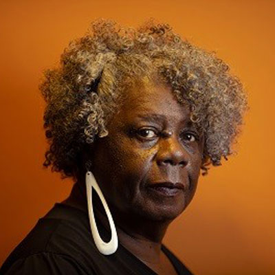
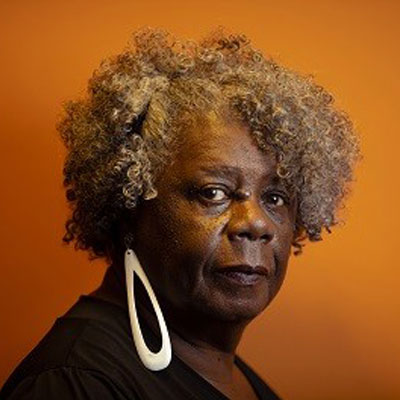

A obra Ponciá Vicêncio, de Conceição Evaristo, é uma narrativa profunda e simbólica que aborda questões como identidade, ancestralidade e desigualdade social. Publicado em 2003, este romance segue a trajetória de Ponciá, uma mulher negra oriunda de uma família que carrega o peso da escravidão e a luta por reconstruir suas vidas em uma sociedade marcada por discriminação e exclusão.
O enredo é construído em torno da busca de Ponciá por pertencimento e reconexão com suas raízes. Criada em uma vila rural, ela parte para a cidade em busca de melhores condições de vida, mas enfrenta uma série de perdas e desencontros. O passado da personagem, vinculado ao legado de seu avô, Vô Vicêncio, reflete a herança de um sistema escravocrata que deixou marcas profundas em sua família. Na cidade, Ponciá experimenta a alienação e o isolamento, perdendo-se de si mesma, mas também é nesse ambiente que a memória e a ancestralidade emergem como formas de resistência e reconstrução identitária.
Os personagens são representações complexas da luta e da dor de uma comunidade afrodescendente. Ponciá, a protagonista, é um símbolo de resiliência e fragilidade, dividida entre o desejo de esquecer o passado e a necessidade de honrar suas raízes. Seu irmão, Luandi, busca na educação e no trabalho militar um caminho para superar as limitações impostas pela sociedade, enquanto a mãe dos dois encarna o sofrimento de gerações marcadas pela exclusão e pelo desamparo. Outros personagens, como Bilisa e Nêngua Kainda, ampliam o retrato das adversidades enfrentadas por mulheres negras, explorando temas como violência de gênero e a perda de sonhos.
O discurso da obra é fortemente marcado pela denúncia social e pela valorização da memória. Conceição Evaristo utiliza uma linguagem poética e simbólica para criar uma narrativa que é, ao mesmo tempo, íntima e universal. A história é contada sob a perspectiva de Ponciá, mas entrelaça memórias e vozes que dialogam com o passado e o presente. Este formato reforça o caráter coletivo da narrativa, situando as experiências individuais no contexto histórico da escravidão e suas consequências na sociedade contemporânea.
O público-alvo de Ponciá Vicêncio é amplo, mas com ênfase em dois grupos principais. Em primeiro lugar, a obra dialoga diretamente com leitores afrodescendentes, oferecendo uma representação autêntica das dores, lutas e resistências que definem a experiência de muitos negros no Brasil. Por meio da memória e da ancestralidade, a narrativa busca reafirmar a identidade negra e reforçar a importância de se reconhecer as raízes históricas. Em segundo lugar, a obra se dirige a leitores não negros, desafiando-os a refletir sobre seu papel na perpetuação das desigualdades raciais e sociais, enquanto os convida a reconhecer a profundidade das contribuições culturais e históricas do povo negro.
Essa multiplicidade de interlocutores reforça o caráter universal da obra, ao mesmo tempo que mantém uma forte conexão com o contexto específico brasileiro. Ponciá Vicêncio transcende a mera ficção, tornando-se uma denúncia e um convite ao diálogo sobre as injustiças históricas e contemporâneas. Conforme destacado pelo site Letras Pretas, a obra revela como o racismo estrutural molda as vidas dos excluídos, enquanto, segundo Fala! Universidades, expõe os "astros em morte lenta" que enfrentam um ciclo de exclusão e apagamento cultural
A intencionalidade do discurso é clara: a autora busca não apenas retratar as dificuldades vividas pelos afrodescendentes no Brasil, mas também destacar a importância da memória e da ancestralidade como elementos de resistência. A obra questiona a ideia de democracia racial e expõe as persistentes desigualdades sociais e raciais, enquanto celebra a força de um povo que, apesar de tudo, luta para preservar sua história e dignidade.